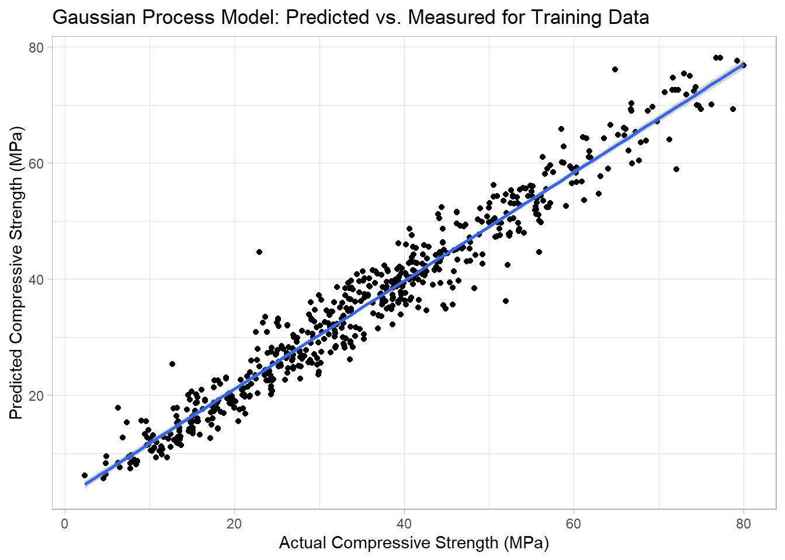
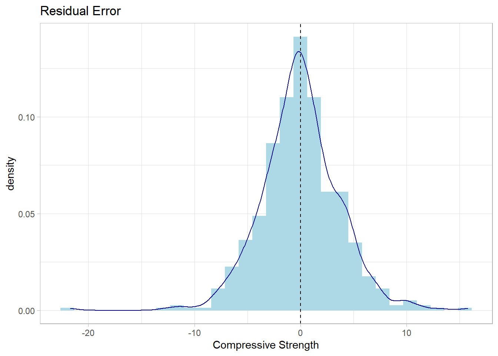

A GP model to predict the compressive strength of concrete is built using R and Python.
This post shares my first analysis of the Concrete dataset using a Gaussian Process modeling approach. I was interested in Gaussian Process models due to the possibility of building a non-linear regression model which fits the dataset well and allows for predictions on new data along with the uncertainty in that prediction. I have previously analyzed this dataset using a variety of machine learning approaches which allows for a good comparison in prediction performance.
The analysis combines R and Python as I wanted to reuse some of the data cleaning from the previous analyses written in R while the Gaussian Process model was built using Python. The most relevant articles I could find on Gaussian Process modeling contained examples in Python so I decided to use a similar approach. In this post, I am using the GaussianProcessRegressor model in the Sci-Kit Learn package to build the model. An RStudio blog was written in 2019 in R using tfprobability package on the same dataset but, honestly, I found it difficult to follow and the modeling results (MSE) was higher than my sklearn model.
Load the R libraries and data
Here I am reusing the code from previous analyses on the Concrete dataset. The column names needed to be renamed so that they are more manageable for further data manipulations.
filename <- "Concrete_Data.xls"
folder <- "../data/"
numberCols <- 9 #total number of columns in spreadsheet
colTypes <- rep("numeric", numberCols)
concrete_tbl <- read_excel(path = paste0(folder, filename), col_types = colTypes)
concrete_tbl <- concrete_tbl %>%
rename(cement = starts_with("Cement")) %>%
rename(blast_furnace_slag = starts_with("Blast")) %>%
rename(fly_ash = starts_with("Fly Ash")) %>%
rename(water = starts_with("Water")) %>%
rename(superplasticizer = starts_with("Super")) %>%
rename(coarse_aggregate = starts_with("Coarse")) %>%
rename(fine_aggregate = starts_with("Fine")) %>%
rename(age = starts_with("Age")) %>%
rename(compressive_strength = starts_with("Concrete"))Initialize the Python environment
The reticulate library has been already loaded. We want to use Python packages next so the following code activates a Python 3.8 environment set up through miniconda.
use_condaenv("py3.8", required = TRUE)
py_config()python: C:/miniconda/envs/py3.8/python.exe
libpython: C:/miniconda/envs/py3.8/python38.dll
pythonhome: C:/miniconda/envs/py3.8
version: 3.8.13 | packaged by conda-forge | (default, Mar 25 2022, 05:59:45) [MSC v.1929 64 bit (AMD64)]
Architecture: 64bit
numpy: C:/miniconda/envs/py3.8/Lib/site-packages/numpy
numpy_version: 1.22.4
NOTE: Python version was forced by use_python functionImport Python libraries
import pandas as pd
import numpy as np
#Pre-processing
from sklearn.model_selection import train_test_split
from sklearn.preprocessing import StandardScaler
#Gaussian process model
from sklearn.gaussian_process import GaussianProcessRegressor
from sklearn.gaussian_process.kernels import RBF, ConstantKernel, WhiteKernel
import sklearn.metrics as metrics##Building the Gaussian Process Model
In general, the Sci-kit learn models require the independent (a.k.a. predictor) variables and dependent (a.k.a. target) variables to be in separate dataframes. By convention, the predictors are in X and the target is in y. Using the StandardScaler requires a conversion from a dataframe to a numpy array using .values. Next, we split into train and test datasets.
X = r.concrete_tbl.drop(['compressive_strength'], axis=1).values
y = r.concrete_tbl['compressive_strength'].values
X_train, X_test, y_train, y_test = train_test_split(X,y, test_size = 0.4, random_state = 10)Here, I add the centering and scaling of the predictors and target using StandardScaler. The target variable needs to be converted to a single column using .reshape(-1,1).
scaler = StandardScaler()
target_scaler = StandardScaler()
X_train_scale = scaler.fit_transform(X_train)
y_train_scale = target_scaler.fit_transform(y_train.reshape(-1,1))There are many different options for selecting the kernels however I found that combining the radial basis function (RBF) kernel with a constant to account for mean offset and a white kernel to account for noisy data seemed to be a successful approach for this type of dataset. And by success, I mean a fit that converges to a GP model without further warnings and with a respectable R-squared.
kernel = ConstantKernel() * RBF() + WhiteKernel()
gp_model = GaussianProcessRegressor(kernel=kernel, n_restarts_optimizer = 5)
gp_model.fit(X_train_scale, y_train_scale)GaussianProcessRegressor(kernel=1**2 * RBF(length_scale=1) + WhiteKernel(noise_level=1),
n_restarts_optimizer=5)In a Jupyter environment, please rerun this cell to show the HTML representation or trust the notebook. On GitHub, the HTML representation is unable to render, please try loading this page with nbviewer.org.
GaussianProcessRegressor(kernel=1**2 * RBF(length_scale=1) + WhiteKernel(noise_level=1),
n_restarts_optimizer=5)gp_model.kernel_2.88**2 * RBF(length_scale=2.77) + WhiteKernel(noise_level=0.0679)You need to reverse the scaling in order to compare with the original values and more easily assess the metrics.
#Model Evaluation and error calculations
y_pred_tr_scale, y_pred_tr_std_scale = gp_model.predict(X_train_scale, return_std=True)
y_pred_tr = target_scaler.inverse_transform(y_pred_tr_scale.reshape(-1,1))
train_metrics = [["RSq", metrics.r2_score(y_train, y_pred_tr)], ["Adjusted RSq", 1 - (1-metrics.r2_score(y_train, y_pred_tr))*(len(y_train)-1)/(len(y_train)-X_train.shape[1]-1)], ["MAE", metrics.mean_absolute_error(y_train, y_pred_tr)], ["MSE", metrics.mean_squared_error(y_train, y_pred_tr)], ["RMSE", np.sqrt(metrics.mean_squared_error(y_train, y_pred_tr))]]
train_metrics_df = pd.DataFrame(train_metrics, columns = ["metric", "value"])
print(train_metrics_df) metric value
0 RSq 0.951056
1 Adjusted RSq 0.950414
2 MAE 2.761809
3 MSE 13.810692
4 RMSE 3.716274We can visualize the predicted vs. actual (measured) compressive strengths in the figure below.
pred_train <- tibble(y_train = py$y_train, y_pred_tr = as.vector(py$y_pred_tr))
ggplot(data = pred_train, aes(x = y_train, y = y_pred_tr)) +
geom_point() +
geom_smooth(method = "lm") +
labs(title = "Gaussian Process Model: Predicted vs. Measured for Training Data",
x = "Actual Compressive Strength (MPa)",
y = "Predicted Compressive Strength (MPa)") +
theme_light()`geom_smooth()` using formula 'y ~ x'
The distribution of model residuals should ideally be centered around 0 and normally distributed. The residuals for the Gaussian Process Model are shown in the figure below.
pred_train %>%
mutate(resid_tr = y_train - y_pred_tr) %>%
ggplot(aes(x = resid_tr)) +
geom_histogram(aes(y = ..density..), fill="lightblue") +
geom_density(color="darkblue") +
geom_vline(aes(xintercept = mean(resid_tr)), linetype = "dashed") +
labs(title = "Residual Error",
x = "Compressive Strength") +
theme_light()`stat_bin()` using `bins = 30`. Pick better value with `binwidth`.
The residuals are centered around zero and about evenly distributed between negative and positive deviations. A few outliers are evident especially in the prediction beyond -20 MPa. The model performance on the training data was deemed acceptable to proceed to evaluation of the test data.
Evaluating the GP model predictions for the test data
You need to scale the test data before prediction using the same scaling used on the training dataset.
X_test_scale = scaler.transform(X_test)
y_pred_te_scale, y_pred_te_std_scale = gp_model.predict(X_test_scale, return_std=True)
y_pred_te = target_scaler.inverse_transform(y_pred_te_scale.reshape(-1,1))
y_pred_te_std = y_pred_te_std_scale * target_scaler.scale_
tpred_gp = metrics.r2_score(y_test, y_pred_te)
test_metrics = [["Rsq", metrics.r2_score(y_test, y_pred_te)], ["Adjusted RSq", 1 - (1-metrics.r2_score(y_test, y_pred_te))*(len(y_test)-1)/(len(y_test)-X_test.shape[1]-1)], ["MAE", metrics.mean_absolute_error(y_test, y_pred_te)], ["MSE", metrics.mean_squared_error(y_test, y_pred_te)], ["RMSE", np.sqrt(metrics.mean_squared_error(y_test, y_pred_te))]]
test_metrics_df = pd.DataFrame(test_metrics, columns = ["metric", "value"])
print(test_metrics_df) metric value
0 Rsq 0.891769
1 Adjusted RSq 0.889621
2 MAE 4.019690
3 MSE 29.627775
4 RMSE 5.443140The model performance was a bit worse for the testing data as compared to the training data. I believe one reason is that cross-validation was not used and the model is overfitting the training data. One of the advantages of the Gaussian Process model is the estimation of uncertainty in the prediction. In the figure below, the predicted vs. measured compressive strengths for the test dataset are displayed along with error bars for +/- 1 standard deviation.
pred_test <- tibble(y_test = py$y_test, y_pred_te = as.vector(py$y_pred_te), y_pred_te_std = py$y_pred_te_std)
ggplot(data = pred_test, aes(x = y_test, y = y_pred_te)) +
geom_point() +
geom_errorbar(aes(ymin = y_pred_te - y_pred_te_std, ymax = y_pred_te + y_pred_te_std)) +
geom_smooth(method = "lm") +
labs(title = "Gaussian Process Model: Predicted vs. Measured for Testing Data",
x = "Actual Compressive Strength (MPa)",
y = "Predicted Compressive Strength (MPa)") +
theme_light()`geom_smooth()` using formula 'y ~ x'
Summary
A Gaussian process model has been built for the concrete dataset. The predictive performance of this model was lower than for random forest and xgboost models (GP R2 = 0.89 vs. RF R2 = 0.94). The main advantage of the Gaussian Process model is the calculation of prediction error which can be very helpful in assessing confidence in future predictions.
─ Session info ───────────────────────────────────────────────────────────────
setting value
version R version 4.2.0 (2022-04-22 ucrt)
os Windows 10 x64 (build 19043)
system x86_64, mingw32
ui RTerm
language (EN)
collate English_United States.utf8
ctype English_United States.utf8
tz America/Chicago
date 2022-09-02
pandoc 2.18 @ C:/Program Files/RStudio/bin/quarto/bin/tools/ (via rmarkdown)
quarto 1.0.36 @ C:\\PROGRA~1\\RStudio\\bin\\quarto\\bin\\quarto.cmd
─ Packages ───────────────────────────────────────────────────────────────────
! package * version date (UTC) lib source
P dplyr * 1.0.10 2022-09-01 [?] CRAN (R 4.2.0)
P forcats * 0.5.2 2022-08-19 [?] CRAN (R 4.2.1)
P ggplot2 * 3.3.6 2022-05-03 [?] CRAN (R 4.2.1)
P purrr * 0.3.4 2020-04-17 [?] CRAN (R 4.2.1)
P readr * 2.1.2 2022-01-30 [?] CRAN (R 4.2.1)
P readxl * 1.4.1 2022-08-17 [?] CRAN (R 4.2.1)
P reticulate * 1.26 2022-08-31 [?] CRAN (R 4.2.1)
P sessioninfo * 1.2.2 2021-12-06 [?] CRAN (R 4.2.1)
P stringr * 1.4.1 2022-08-20 [?] CRAN (R 4.2.1)
P tibble * 3.1.8 2022-07-22 [?] CRAN (R 4.2.1)
P tidyr * 1.2.0 2022-02-01 [?] CRAN (R 4.2.1)
P tidyverse * 1.3.2 2022-07-18 [?] CRAN (R 4.2.1)
[1] C:/Users/David Zoller/AppData/Local/Temp/RtmpQ5SNYG/renv-library-35903dd013ae
[2] C:/Users/David Zoller/Documents/datadavidz.github.io/renv/library/R-4.2/x86_64-w64-mingw32
[3] C:/Program Files/R/R-4.2.0/library
P ── Loaded and on-disk path mismatch.
─ Python configuration ───────────────────────────────────────────────────────
python: C:/miniconda/envs/py3.8/python.exe
libpython: C:/miniconda/envs/py3.8/python38.dll
pythonhome: C:/miniconda/envs/py3.8
version: 3.8.13 | packaged by conda-forge | (default, Mar 25 2022, 05:59:45) [MSC v.1929 64 bit (AMD64)]
Architecture: 64bit
numpy: C:/miniconda/envs/py3.8/Lib/site-packages/numpy
numpy_version: 1.22.4
NOTE: Python version was forced by use_python function
──────────────────────────────────────────────────────────────────────────────